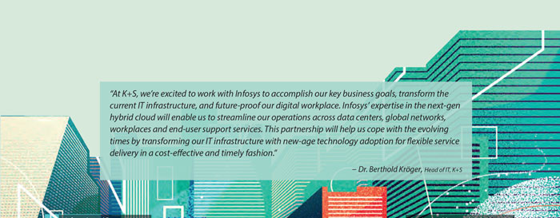

That's Live Enterprise
Next-level instincts, intelligence, and intuition.
Reimagining everyday decisions at Infosys
Letting intuition run their business
Reimagining everyday decisions at Infosys
Early in our journey to becoming an always resilient, evolving live enterprise, we recognized the need to build intuitive decision-making capabilities within a landscape of reimagined processes, experiences and digital infrastructure. This, we knew, would be vital for automating routine and deterministic decisions, while at the same time providing instant simulation capabilities for users to experiment and test in, before making more complex decisions about what and how to adapt in response to disruption.
To facilitate this, we developed the Infosys Knowledge Graph that links employees, through a network of information, with a view into their skills sets, expertise, projects, innovations, industry solutions, IP and even relevant client associations. This is set within the larger context of near-realtime information of all interactions and business operations active within the Infosys ecosystem. We are working on overlaying this network with the Infosys Digital Brain so it can continuously read the Graph to determine trends and signals, and recommend responses that enable us to make critical adaptive decisions intuitively.
This is making us more relevant to our clients.
Leveraging the Infosys Knowledge Graph, our project teams now find the right fit talent for their project needs in real time. The AIbased talent‑matching service considers multiple factors like skills, adjacent skills, proficiency levels, prior experience working with a given client, talent connections with project team members and their readiness to start. If the best fit is not readily available, the Infosys Digital Brain, constantly monitoring the Infosys talent pipeline, alerts the project team automatically when the right fit is found. We are now extending this capability to our recruitment platform so we are able to quickly spot the availability of right fit talent pools outside of Infosys and bring them into our fold intuitively.
For our employees, based on their professional career and learning aspirations, the Infosys Digital Brain automatically recommends the right courses and learning paths while connecting them to experts and communities that can support their upskilling journey and improve their relevance to clients.
Perhaps the most empowering of them all, we are now using these capabilities to sense the changing needs of our clients in a post-COVID-19 world, based on their multichannel interactions with us. We relay this intelligence to our client partners in near real time along with recommendations for useful responses.
Not surprisingly, our clients have expressed great interest in building similar capabilities to serve their own business contexts.
Mohammed Rafee Tarafdar
SVP – Unit Technology Officer

Letting intuition run their business
The human mind is wired to see patterns. It processes information in conjunction with insights from past experiences to create intuition. Intuition informs much of our decisions. Today, we are helping organizations develop a similar intuition to drive decisions swiftly, accurately and to act with resilience in the face of disruption. AI and automation lie at the core of this endeavor.
For us, this manifests in an ecosystem of tools that captures and maps out complex and vast process environments. There begins our effort to reimagine and improve the way it all works. We rely on historical data, both qualitative and quantitative, to learn from and then guide the formation of patterns that help us to automatically detect, validate, classify and resolve problems. These patterns also help us see opportunities to get better at the things we already do. Our Bot Factory, with its repository of reusable microbots, helps us to quickly stitch together and automate the reengineered process landscape while bringing in self-service capabilities.
We also partner with our clients to bring to them the advantages of AI and automation and build intuitive decisions and agile-action environments for their businesses.
For one client, in the heavy engineering industry, we leveraged machine learning techniques including Deep Learning Neural Networks to help their experts improve underwater corrosion detection and assessment. We instituted data patterns and made it possible to predict leakages thereby ensuring a high degree of asset integrity and standards of safety.

For a telecom client, we deployed AI techniques of prediction, time-series based event stitching, correlation analysis, text analysis and state transition models to improve order activation predictability. This greatly improved their customer experience, while lowering operational costs and accelerating revenue realization.
We optimized plant scheduling for a manufacturer, reducing costs and increasing throughput, by predicting the optimal sequence of work orders, eliminating human error, reducing idle time of assembly lines and streamlining delivery.
In the enterprise context, there is sometimes the need to respond to disruption that emanates after a crisis. Our clients today need to chart a meaningful way forward in the new normal post COVID-19. We are working to build machine learning algorithms and automation as potential solutions to the recent disruptions in their workflows and other processes that rely primarily on human interventions. Our research in areas like Explainable AI, Transfer Learning, Generative AI and Capsule Networks are great resources that enrich this journey.
Balakrishna D.R.
SVP – Head, AI & Automation Services